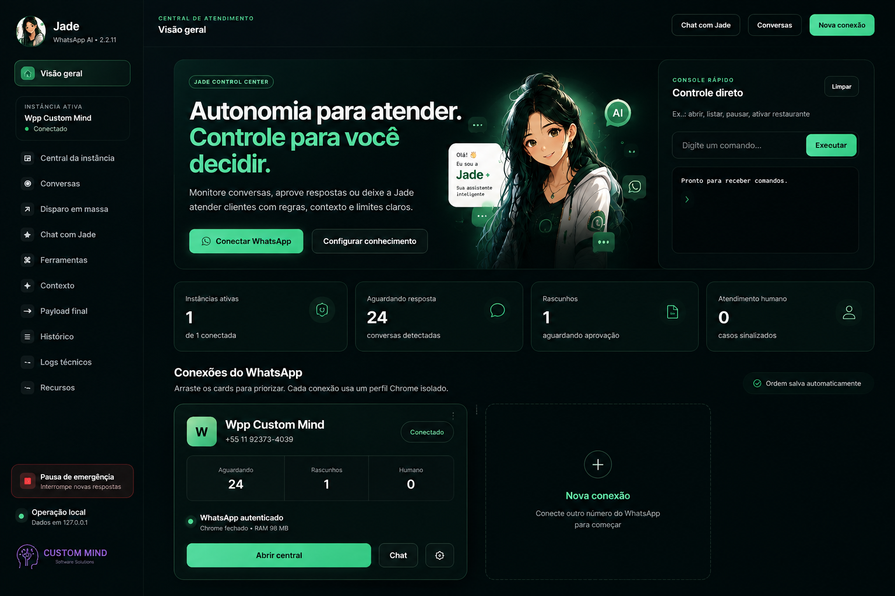
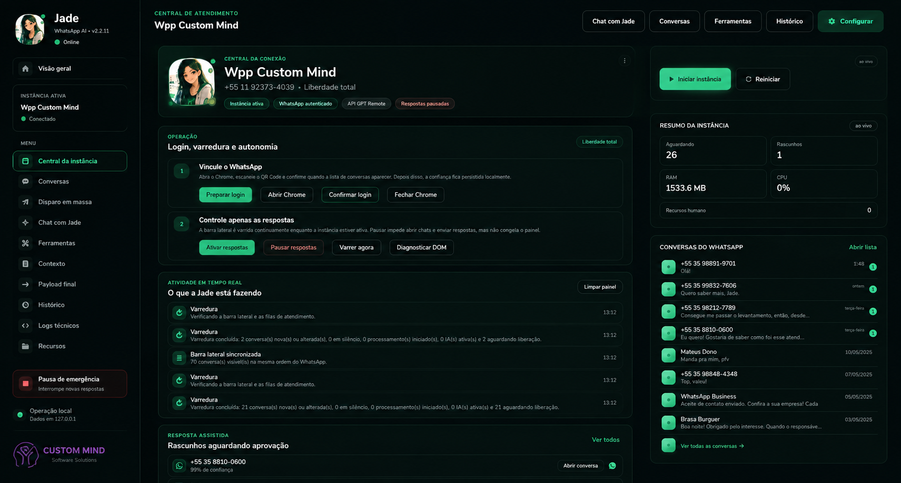

Primeira atenção sem fila
O contato recebe retorno enquanto a intenção ainda está quente, sem depender de alguém estar disponível naquele segundo.
A Jade é uma central operacional para WhatsApp: acompanha conversas, usa contexto da empresa, prepara respostas e mantém o humano no controle quando a situação pede decisão.

A proposta não é deixar uma IA conversando sozinha sem visibilidade. A Jade organiza a operação em torno de conexões, conversas, contexto, rascunhos, critérios e entrada humana — tudo em uma mesma central.
O contato recebe retorno enquanto a intenção ainda está quente, sem depender de alguém estar disponível naquele segundo.
Regras, dados e contexto operacional evitam que cada atendimento comece do zero.
Fluxos podem trabalhar com respostas assistidas e aprovação quando a operação exige supervisão.
Negociação, exceções e relacionamento continuam com pessoas quando esse é o melhor caminho.
As telas reais mostram a diferença entre apenas gerar texto e operar atendimento: a Jade acompanha instâncias, conversas, estado das respostas e pontos em que a equipe precisa assumir.
Conexões do WhatsApp, conversas detectadas, rascunhos e atendimento humano aparecem no mesmo contexto.
O operador consegue enxergar a atividade, controlar respostas, revisar rascunhos e acompanhar conversas sem tratar a IA como uma caixa-preta.

A automação ganha valor quando fica claro onde ela começa, o que pode decidir e em qual ponto uma pessoa deve assumir.
A conversa chega por uma conexão do WhatsApp.
A Jade usa regras e informações disponíveis para entender o cenário.
A resposta segue o escopo definido e pode virar rascunho quando houver supervisão.
Regras determinam se a automação continua ou se o caso precisa de alguém.
O humano entra já sabendo o que aconteceu antes.
Uma central de atendimento precisa continuar controlável mesmo quando automatiza. As próprias telas da Jade deixam isso explícito.
Quando a operação pede supervisão, respostas podem ficar aguardando revisão em vez de sair automaticamente.
Novas respostas podem ser interrompidas para devolver o controle imediatamente à equipe.
O objetivo é conseguir entender o estado da operação e investigar o que aconteceu quando algo precisa de revisão.
O produto não tenta esconder quando uma pessoa é necessária. Esse ponto faz parte do desenho do fluxo.
A implantação começa pelas regras reais do atendimento, não por uma promessa de substituir toda a equipe.
Não. Ela assume partes repetitivas, organiza contexto e pode encaminhar situações que exigem julgamento, negociação ou relacionamento para uma pessoa.
Sim. A central trabalha com visibilidade operacional e pode incluir rascunhos e aprovação conforme o fluxo definido.
Sim. Regras, contexto, informações e exemplos ajudam a orientar as respostas dentro do escopo da implantação.
Sim. A operação prevê controles para interromper novas respostas e devolver o atendimento ao controle humano quando necessário.
Mostre como sua equipe atende hoje. A partir disso dá para separar o que pode ser automatizado, o que precisa de contexto e o que deve continuar humano.
Conversar sobre a Jade ↗